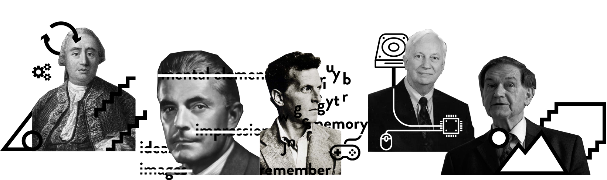
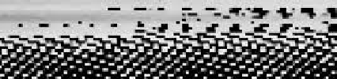
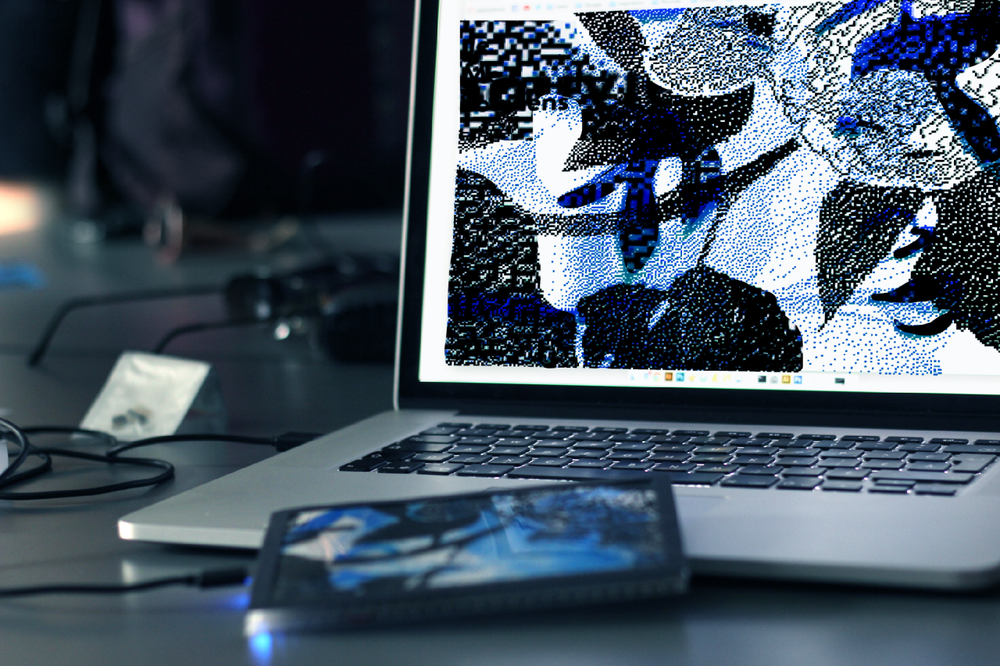

L'oub.li pixélisé
la carte postale soumise à l’accélération sociale
1.0 Intentions / Problématique
"Si la technologie se souvient à notre place aurons-nous moins de souvenirs?" Sherry Turkle
"lorsque l'on dépend de l'ordinateur pour se souvenir du passé, on s'intéresse surtout au passé qui est conservé sur l'ordinateur, quel qu'il soit. Et l'on apprend à préférer le passé qui est plus simple à retrouver." Sherry Turkle
Je fus de celles qui envoyaient des cartes postales pendant leurs vacances, pour partager l’expérience vécu et faire savoir aux heureux élus que l’on pense à eux. Je suis de celles qui, cellulaires en poche, prennent des photos destinées soit à mourir au fond d’un disque dur, soit à être postées compulsivement sur différentes plateformes de partage. José van Djick est d’avis que “Like postcards, cameraphone pictures are meant to be thrown away after they are received” je pense au contraire que comme les cartes postales elles sont destinées à être conservées puis retrouvées par hasard ou non. Je suis de celles qui perdent des mois de fichiers dans les décès quasi simultanés de leurs disques durs et de leur ordinateur. Je compris ainsi que ces fichiers étaient bien plus que des cartes postales numériques. Je les utilisaient en quelque sorte comme des aides mémoire de ce que j’avais fait, vu et vécu. Ma mémoire s’avéra cependant plus fiable que je ne le pensais soulignant ainsi la supercherie du mythe que les technologies numérales sont infaillibles et surtout pallient aux insuffisances de l’humain. Autrement dit je pris également conscience que les supports de mémoire numériques ne remplacent pas notre mémoire mais que s’ils la supportent, ils la redéfinissent également. Et qu’ils semblent à certains égards aussi éphémères sinon plus que les supports traditionnels comme le papier ou la pierre.
2.0 Méthodologie
Mon projet de recherche pour la création nécessite plutôt une description conceptuelle afin de comprendre comment le cheminement intellectuel influence et modélise la réalisation expérimentale. Ce qui m'importe n'est pas la manière utilisée pour arriver au résultat mais plutôt la pertinence du résultat en fonction de la problématique développée. Il s'agit donc de s'imprégner et d'infiltrer un domaine de recherche classique afin d'en dégager une problématique et d'y répondre par la création. Cela consiste à effectuer des allers-retours perpétuels entre les deux aspects du mémoire afin de les mettre en dialogue. À partir d’un problème ressenti il s’agit d’expérimenter, de prendre du recul, puis d’arrimer ces expérimentations à un cadre théorique et de recommencer ce processus jusqu’à la découverte de la problématique et la réalisation de l'œuvre adéquate.
3.0 Cadrage Conceptuel
"Le numérique n'est éphémère que si on ne s'applique pas à le rendre permanent."Sherry Turkle
3.1 Une conception moderne de la mémoire
3.1.1 Une conception moderne de la mémoire
Théorisée depuis Platon, sa conception moderne débute selon Howard S. Kurtzman avec John Locke et l’empirisme anglais. La mémoire à cette époque était considérée comme une capacité à répéter des expériences passées ou encore comme un appareil passif de stockage, comme “the storehouse of our ideas.” David Hume poussera l’analyse en notant que la différence entre la mémoire et l’imagination dépend de la vivacité du souvenir de l’idée. Wundt dans la perspective de la psychologie expérimentale écrira que l’acte de mémoire “is the rise of a new idea in consciousness, always differing from the earlier idea to which it is referred, and deriving its elements as a rule from various preceding ideas”. Les mouvements qui suivèrent jouèrent beaucoup sur les mots. Le behaviorism de John B. Watson refusant d’utiliser les termes de mémoire, “images, impressions, ideas, ou mental elements”, en réaction aux psychologies de la conscience. Tandis que Wittgenstein et ses disciples se concentrent sur la compréhension des “language-games in which "remember" and "memory" participate. Non convaincu par aucune de ces théories, le cognitivisme qui émergea dans les années 1980 argumente en faveur d’une mémoire humaine identique à celle d’un ordinateur. L’apprentissage était compris comme “modification of, not just a supplement to, previous knowledge.” Tandis que le connexionnisme, dérivé du cognitivisme, schématisait le stockage de n ouvelles connaissances par l’insertion de connexions entre la nouvelle information et celles déjà existantes.
3.1.2 Un nouveau paradigme mnésique
“L’écriture des hypomnemata s’oppose à cet éparpillement en fixant des éléments acquis et en constituant en quelque sorte du passé." Michel Foucault
“C’est à partir de cette finitude de la mémoire et de sa suppléance prothétique qu’une connaissance devient possible.” Bernard Stiegler
On ne peut cependant considérer le rôle de l’extériorisation dans le processus mnésique sans se pencher sur le rôle de l’outil qui conditionne cette extériorisation et donc sur l’évolution technologique qui permet la production du dispositif. Une théorie de la mémoire médiatique voit le jour. B. Stieler blâme une évolution motivée par l’instantanné qui propulse les médias au coeur du processus de mémorisation en leur laissant le soin de guider des masses qui n’ont plus le temps de réfléchir. Une des manières d’aborder et de comprendre la mémoire est de se pencher sur les dynamiques qui s’appliquent à ces supports.Après tout la mémoire est un ensemble neuronal en perpétuelle évolution qui s’active pour répondre à des stimuli provoqués par l’environnement, la carte postale et la photographie se devant d’être compris comme des objets de cet environnement. Or les dynamiques temporelles dans lesquelles sont pris ces supports semblent cruciales, puisqu’elles semblent faire évoluer à la fois nos modes de production et nos modes de consommation de ces dits supports de mémoire.
3_2 La condition temporelle
3.2.1 L'accélération
"un très grand nombre de tensions sociales [...] sont structurées par la manière d’aborder le temps” Philippe Zarifian, temps et modernité
Le temps est au coeur des préoccupations individuelles et sociales. Tantôt en essayant de le réduire au maximum comme dans les domaines du transport, de la communication ou de la production. Tantôt car ce temps qui rythme nos vies semble être devenu une denrée rare,trop de personnes se plaignant de ne plus en avoir ou de le voir passer trop vite. Paul Virilio et bien d’autres, comme le note Hartmut Rosa, sont d’opinion que la formulation de la théorie de la relativité par A. Einstein a entrainé une accélération du réel. La perte de la simultanéité universelle a en effet posé la question philosophique de la relativité de l’évènement ou de l’objet. La chronologie est supplantée par le concept d’instantanéité qui répond aux exigences physiques de l’instant t et non de l’instant t-1 ou t+1.En conséquence, la mémoire devient elle aussi relative, et se redéfinit comme une accumulation logique d’évènements-instants se déroulant dans un espace-temps en quatre dimensions. Parallèlement l’application du principe physique de la relativité a permis de comprendre que pour des corps ou phénomènes avoisinant la vitesse de la lumière, temps et distances pouvaient rétrécir. L’humain n’ayant pas les capacités pour traiter ni même énoncer l’instantané, c'est désormais "le temps machine [qui] domine le temps humain de la réflexion”.
3.2.2 Redéfinition du rôle de l'image
Il importe d’identifier des moteurs de vitesse pour comprendre comment un temps réel illusoire peut faire force d’idéologie. À ce sujet Hartmut Rosa, dans sa critique de la modernité tardive identifie “deux forces motrices [..], alimentant sans cesse la roue de l’accélération” à savoir la compétition et la promesse de l’éternité. On observe en effet que l’interprétation que les sociétés capitalistes ont faites de la doctrine de Benjamin Franklin “Remember time is money” transcende aujourd’hui largement la sphère économique. Des penseurs tels que Pierre Bourdieu ou James S, Coleman utilisent l’expression de capital social tandis qu’Harmut Rosa explique que la répartition des richesses s’effectue selon une logique de compétition dont le facteur “déterminant ou discriminant” est la réussite. Cependant bien que “la logique sociale de la compétition soit telle [qu’elle soit devenue] le seul but général de la vie, tant sociale qu’individuelle”37, elle ne représente pas le seul facteur d’accélération. La perte des institutions religieuses, en entrainant la redéfinition du sens de la vie, joue aussi un rôle important. Les notions de plénitude ou de qualité de vie ne sont plus déterminées par des standards religieux, mais par la richesse, “la somme des expériences vécues”.
" Autrement dit l’oubli devient un facteur d’inexistence sociale puisqu’il soustrait des évènements à la somme de mes expériences vécues."
3.3L'oubli
3.3.1 Un concept inhérent à la mémoire
" Ainsi à l’ère numérique ce n’est plus la somme des traces qui forme mémoire mais la somme des traces ré-intériorisées."
La massification de la captation pose le problème de l’intervention de l’oubli nécessaire au souvenir. En effet en amont des processus d’enregistrement tel que la gravure, l’écriture voir même l’imprimerie, il y avait une réflexion sur la pertinence de l’extériorisation et de la conservation de l’évènement. L’avènement du numérique et la notion de captation instantannée déplacent ce processus réflexif indispensable faisant de l’oubli un acte rétropsectif. Désormais l’oubli intervient plus dans le futur par ignorance de ce qui s’est avéré futile. Or de Platon à aujourd’hui les auteurs sur la mémoire sont unamines sur le fait que la trace doit être ré-intériorisée afin d’éviter l’oubli. Ainsi dans le Phèdre, Stiegler, B. revêt ainsi le rôle du roi Thamus pour qui les hypomnemata, tels que les disques durs ou les stockages en ligne aujourd’hui, sont des poisons (pharmakon) pour l’humanité. Tandis que je joue Theuth en pensant au contraire qu’aujourd’hui la non réappropriation n’aboutit pas à l’abrutissement mais plutôt permet l’oubli nécessaire au souvenir.
3.3.2 Les formes d'oubli négatif
Lorsque l’on parle d’oubli du support, on fait référence à l’obsolescence programmée des objets contemporains mais aussi à l’évolution constante et rapide des normes d’écriture et de stockage. Pour répondre à un faux besoin capitaliste d’amassement de richesses la réduction des temps de production n’a pas eu pour effet une réduction du temps de travail mais plutôt une surproduction de biens et services consommables éphémères.
Le support n’est plus une garantie de pérennité de l’information, son contenu se déplaçant mathématiquement de support en support pour survivre. Les informations renfermées sur ce type de supports ont elles aussi une espérance de vie limitée. Autrement dit elles sont également vouées à la disparition et donc potentiellement à l’oubli, puisque l’évolution des normes et conventions techniques rendra soit le support soit l’information obsolète et illisible.
D’autre part, le processus d’écriture et de conservations des images numériques comporte lui aussi des failles susceptible de générer de l’oubli. On parle alors de perte de données par compression, par corruption et par diffusion. Le principe de compression intervient majoritairement lors de l’enregistrement d’une image numérique. Les différents formats tels que le .jpeg, le .png ou encore le .raw correspondent à des degrés de compression différents que l’on dit avec ou sans perte. Le .jpeg par exemple correspond à une compression avec perte puisque l’on modifie l’espace couleurs, le nombre de pixels ou encore la formule mathématique de l’image. Tandis que les types de compressions sans pertes, tel que le .png, jouent avec la méthode d’encodage pour que la suite de 0 et de 1 soit la plus petite et la plus authentique possible. Ce processus peut se répéter comme lorsque l’on modifie une photographie ou qu’on la téléverse sur une plateforme ayant ses propres critères. Par ailleurs, si une erreur survient lors de l’encodage du fichier, on parle de fichier corrompu partiellement comme le cas du glitch, c’est à dire que le fichier reste lisible mais différemment ou de fichier corrompu à 100% lorsqu’il n’est plus lisible du tout. Pour finir le numérique et plus particulièrement l’internet accélère le processus d’oubli des métadonnées. C’est ce que j’appelle la perte par diffusion. En effet une fois publiée une photographie peut voyager beaucoup plus facilement qu’auparavant ce qui rend le traçage de sa source quasiment impossible. Il existe donc également une perte des informations reliées aux images comme leur auteur, leur date, etc...
4.0 Corpus d'oeuvres
"Cet exercice permet entre autre, par établissement des similitudes et différences avec un nombre d'œuvres restreint, d'affiner les contours de la réflexion théorique mais surtout de la réalisation artistique."
4.1I am sitting in Stagram
I am sitting in Stagram
Ré-appropriation du travail performatif de Alvin Lucier I am sitting in a room (1969).
Pete Ashton re-poste la capture d'écran de la photographie jusqu’à que celle-ci devienne quasiment méconnaissable.Cette étape peut paraître anodine mais au contraire, elle joue un rôle majeur dans l'accélération du processus de dégradation en ajoutant un degré de compression supplémentaire.
En effet, pour chaque post, une première compression a lieu lors de la capture de la photographie (.png à .jpeg), et une deuxième intervient lors du formatage selon les critères d'Instagram52. L’artiste répète donc ce processus environ 90 fois ou autrement dit jusqu'à la phase de décoloration totale de l'image par perte de données engendrée par les différentes compressions. Ce fastidieux travail qui défie les processus automatisés contemporains est devenu populaire contre son gré en faisant le tour de la toile. Riche de sens et d’inspiration, cette oeuvre est conceptuellement et graphiquement enrichissante.
En effet les différentes phases de dégradation que l’on y observe se rapprochent étrangement de l’effet de moiré que j’avais en tête pour illustrer ce processus, confirmant ainsi mon intuition créatrice. Sans copier le processus de cette œuvre, je souhaite simuler l’effet de moiré en accélérant la perte de couleurs par l’utilisation de la programmation.
4.2Degenerative / Regenerative
L’artiste a en effet choisi de maintenir en vie le résultat final obtenu après 4 mois et la documentation de son projet. Ainsi D egenerative repose sur la dégradation du texte écrit par l’artiste. Le site fut programmé pour qu’à chaque visite d’un internaute, un caractère du code html soit effacé ou remplacé aléatoirement modifiant ainsi à la fois le contenu et la structure de la page. L’artiste explique que la page était déjà en train de disparaitre au bout de quelque jour, le texte étant devenu complètement illisible, qu’elle atteint un “état stable de coma” après 24 jours et qu’au bout de 4 mois il décida de la laisser en ligne bien qu’elle soit complètement désintégrée. Aujourd’hui vous aurez peut être la chance lors de votre visite de voir le seul caractère fantôme qui persiste, cependant la plupart du temps vous serez face au néant d’internet. R egenerative est la seconde partie de l’expérience Degenerative , comme l’explique Eugenio Tisseli. Sur le même modèle que Degenerative l e texte se désagrège à chaque visite directe (url tapée dans le navigateur) tout en essayant de se régénérer par extraction de passages de texte dans la page référente si le site était atteint en cliquant sur un lien via un autre site. Le nouveau texte, alors partie intégrante de l’œuvre, devient lui aussi l’objet d’une désintégration. En questionnant si chaque chose ne contient pas le germe de sa propre destruction, et en créant une oeuvre qui se désintègre à sa simple vue l’artiste questionne la place du public internaute, son rôle dans l’existence ou la mort du n et.art . L’observation de ce projet qui illustre assez bien le phénomène de perte par diffusion m’a permis de compléter l’aspect dégénératif des métadonnées dans mon propre projet de création.
4.3Noise i
Adam Ferriss
Adam Ferriss est un photographe américain, désormais connu pour ses tableaux numériques psychédéliques, qui explore notamment la data manipulation et n’expose qu’en ligne.
Il découvre la programmation sur le tard avec Processing, lors d’un cours de premier cycle, et devient autodidacte fasciné par le potentiel créatif de l’art génératif. Il glane des librairies, des bouts de code et des conseils sur le web pour réaliser ses projets et épuise les ressources de ses algorithmes avant d’en changer. Son ignorance partielle du fonctionnement de ses programmes joue un rôle dans son processus créatif. En quelque sorte l’accident est attendu puisqu’il ouvre de nouveaux horizons.
Graphiquement très riches, ses expérimentations numériques sont une source d’inspiration. À travers N oise i55, notamment il explore la création de moirés. Je souhaite m’en inspirer et comprendre la manière dont il a construit son algorithme car cette forme d’altération pourrait être utilisée pour représenter l’oubli numérique. En effet, la séparation des couleurs et le mouvement qu’il applique à ces lignes se rapprochent du résultat visuel que je souhaite explorer pour la forme d’oubli par perte de donnée.
5.0 Réalisation de l'oeuvre
Comme on l’aura peut-être compris, la partie créative de ce mémoire ne se veut pas documentaire mais plutôt expérientiel. En effet si la partie écrite explique l’oubli, la création qui la complète propose de le vivre. Ou plutôt de vivre les pertes m enant à l’oubli, ce dernier étant intangible. D ’après un dicton populaire il faut le voir pour le croire. C’est pourquoi je souhaite, par accélération de la perte, i llustrer les corrélations entre les formes d’oubli analogues et numériques. Je ne vise pas tant la prise de conscience de l’oubli, que la production d’émotions que celui-ci suscite. Ainsi que l’utilisateur soit mêlé d’incompréhension, joyeusement ébahi ou encore écœuré, et cette création aura atteint son objectif. Mes recherches de l’existant m’ayant dissuadée du conte interactif, ce projet est devenu l’occasion de travailler sur une idée de longue date à savoir l’utilisation d’un dispositif physique pour influencer le comportement d’une page web. Concept d’autant plus pertinent dans ce projet qu’il établit naturellement un lien entre les médiums analogiques et numériques. Mais quel dispositif est le plus approprié et le plus métaphorique? La carte postale, ayant l’avantage d’être peu couteuse, de reposer sur un mode de distribution aisé mais aussi d’avoir un format très similaire aux p ost que l’on trouve aujourd’hui sur les plateformes de partage numérique (une image accompagnée de peu ou pas de texte) devient le dispositif qui permet d’agir sur son homologue numérique.
5.1Demonstration de l’expérience
5.2Description de l’expérience
1. Le site web : loub.li
2. La commande : n’importe qui peut envoyer sa propre carte postale en soumettant son image
3. La réception de la carte et le téléchargement de l’application lui permettant de jouer avec sa carte
4. L'expérience : observation de la même image que celle imprimée sur la carte ainsi que le texte qui l’accompagne
5. Le partage : à tout moment l’usager peut choisir de partager le résultat de ce qu’il observe
6. La galerie : l'image se dégrade ou se transforme à chaque visualisation
5.3Pour la suite du projet

Du côté de la carte postale, le défi de récupération et d’utilisation du signal de l’encre étant derrière moi, il s’agit désormais de réduire le dispositif électronique au minimum pour que celle-ci soit la plus fine et la moins cher possible. Actuellement doté d’un microcontrôleur Arduino micro, le prototype est fragile et au-delà de 10$, c’est pourquoi je développe la piste du Digispark56, micro-contrôleur compatible Arduino, qui permettrait de réduire considérablement l’épaisseur et le coût de la carte. Cette étape d’amélioration du prototype doit également permettre de déterminer si l’expérience a plus de sens en branchant la carte via la prise usb ou en la connectant avec le WIFI ou le Bluetooth.
2 grandes étapes : la réalisation du site vitrine explicatif ("loub.li") et la réalisation de l’application permettant de jouer avec la carte.
Aujourd’hui, vous navigez sur "loub.li".
L’application est nécessaire, pour contourner l’étape laborieuse de connexion via le terminal, puisque les données entre la carte et le site web passent par un port en série. Les captures d’états que les gens effectuent via l’application sont alors stockées dans une base de données commune à l’application et au site pour qu’elles soient visible depuis le site web.
Il reste donc un gros travail de mise en page du site et de peaufinage des interactions.
Pour le développement de l’application je prévois utiliser la librairie Electron. Développée par GitHub elle permet de créer des applications multi-plateformes avec les technologies Web. Ce qui signifie entre autre, que je n’ai pas à encapsuler node.js moi même, mais également que je peux utiliser le HTML, le CSS et du Javascript pour développer l’application. Il s’agira ici de designer la partie expérience, c’est à dire d’améliorer le skeumorphisme etla sauvegarde de l’image. Pour finir ce projet étant réalisé à partir de librairies Open source, j’aimerais intégrer une page DIY58 avec un tutoriel pour faire sa carte soit même et tous les codes nécessaires pour reproduire l’expérience.
5.4 Remarques Finales
projet novateur
peu ou pas de projets utilisent l’encre pour déclencher des évènements sur une page web peu ou pas de projets utilisent un signal électrique produire un impact sur une image sur le web encre généralement utilisée pour des projets électroniques comprenant du son ou des LED
agit comme un capaciteur
